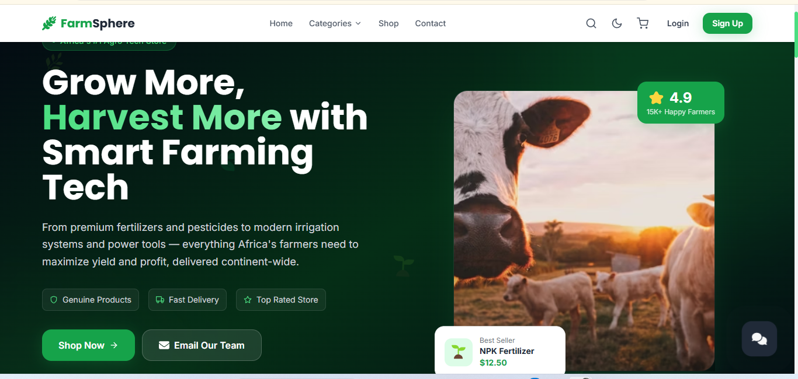

// Preview
Desktop & Mobile View

A full-stack agri-tech e-commerce platform where farmers and agricultural businesses can shop for equipment, chemicals, pesticides, fertilizers, seeds, and farm supplies — built on React, Vite, Tailwind CSS, and MongoDB, deployed across Vercel and Render.

Farmsphere is a full-stack agri-tech e-commerce platform built for the modern farming community. It gives farmers, agribusinesses, and smallholders a single place to browse and purchase agricultural equipment, chemicals, pesticides, fertilizers, seeds, and other farm supplies — without the hassle of multiple suppliers or offline haggling.
The React + Vite frontend is styled with Tailwind CSS and deployed on Vercel for fast global delivery. The Node.js/Express backend API is backed by MongoDB for flexible product catalogue and order management, hosted on Render. Together they deliver a robust, scalable agri-tech shopping experience.
Farmers and agribusinesses in many regions struggle to source quality equipment, chemicals, and supplies reliably. Offline markets are fragmented, pricing is inconsistent, and counterfeit products are common. There was no trusted digital platform purpose-built for agricultural input purchases with proper product information, verified sellers, and convenient delivery.
I built a full-stack agri-tech store where vendors list agricultural products — from tractors and irrigation tools to pesticides and fertilizers — with detailed specs, safety information, and pricing. Buyers get a clean browsing experience with category filters, product search, and a straightforward checkout. MongoDB handles the flexible product catalogue; Render serves the API; Vercel delivers the storefront.
Browse tractors, irrigation systems, sprayers, ploughs, and other farm machinery — with specs, images, and pricing.
Shop herbicides, insecticides, fungicides, and fertilizers with safety data sheets and usage instructions per product.
Filter by product category (equipment, chemicals, seeds, supplies), brand, price range, and availability.
Add to cart, review order, and complete checkout with delivery details — full order history and tracking per user.
Secure JWT-based auth for buyers and vendors, each with tailored dashboards and role-based access control.
Tailwind CSS delivers a clean, usable storefront whether shopping on a phone in the field or a desktop in the office.
Farmsphere stands as the most technically complex project in this portfolio — a full-stack marketplace with a live REST API, persistent NoSQL database, and separate deployment pipelines for frontend and backend. It proved that a solo developer can architect and ship a production-grade two-sided platform.
Personal portfolio with scroll animations, working contact form, and social platform integrations.